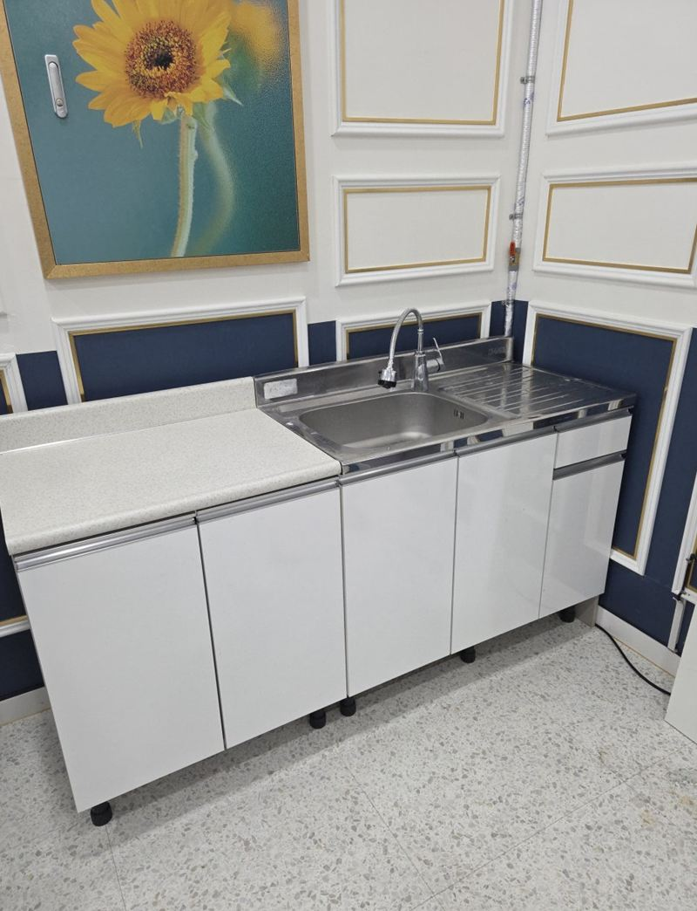
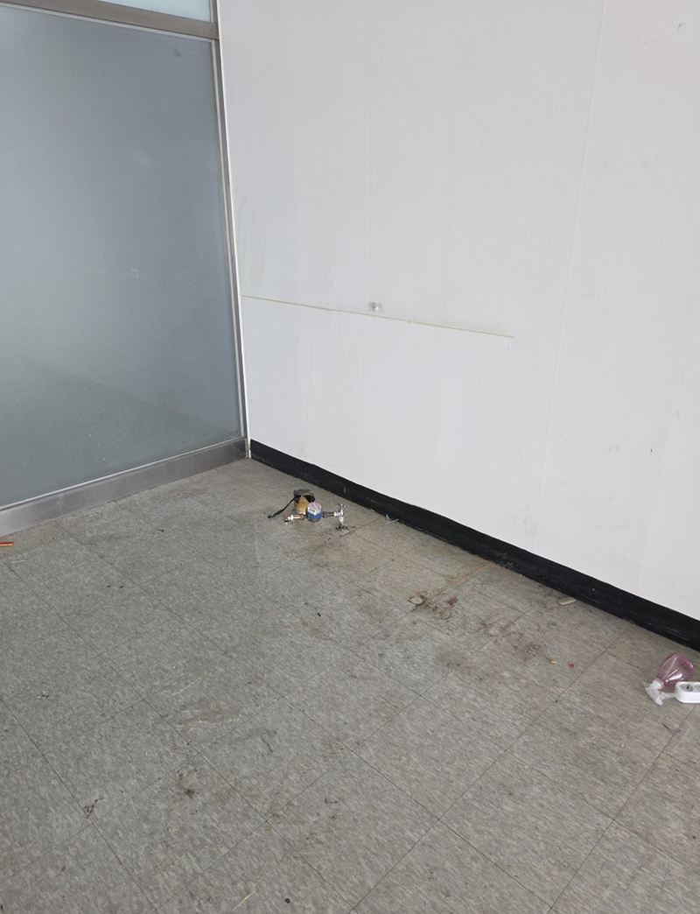
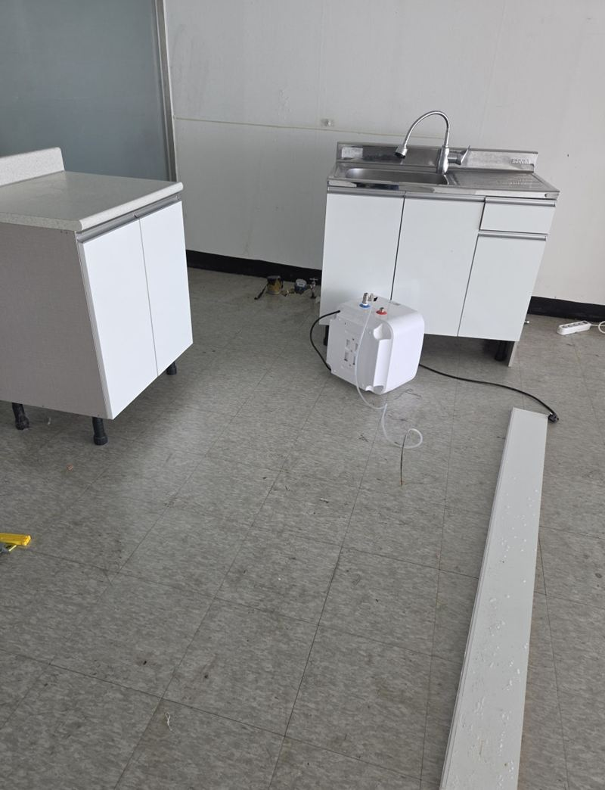
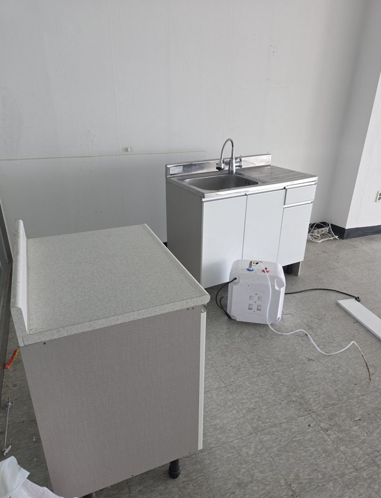
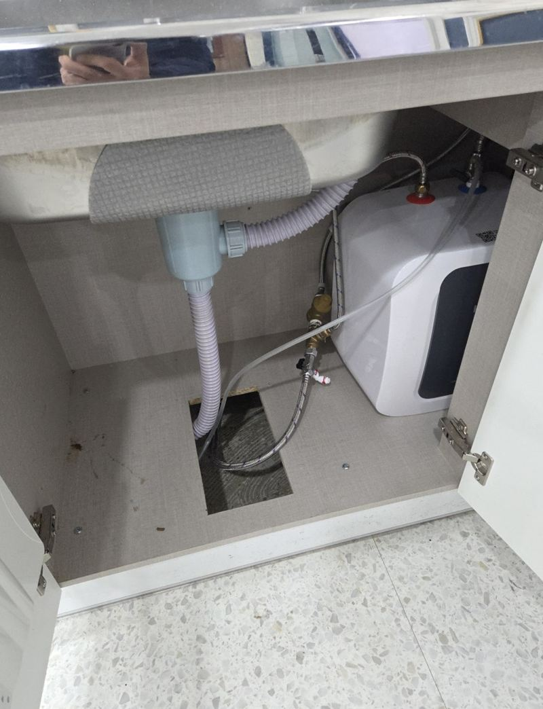
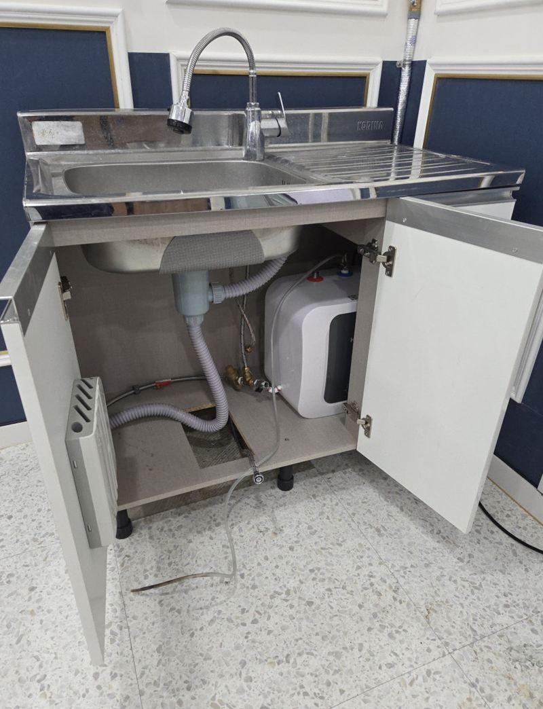
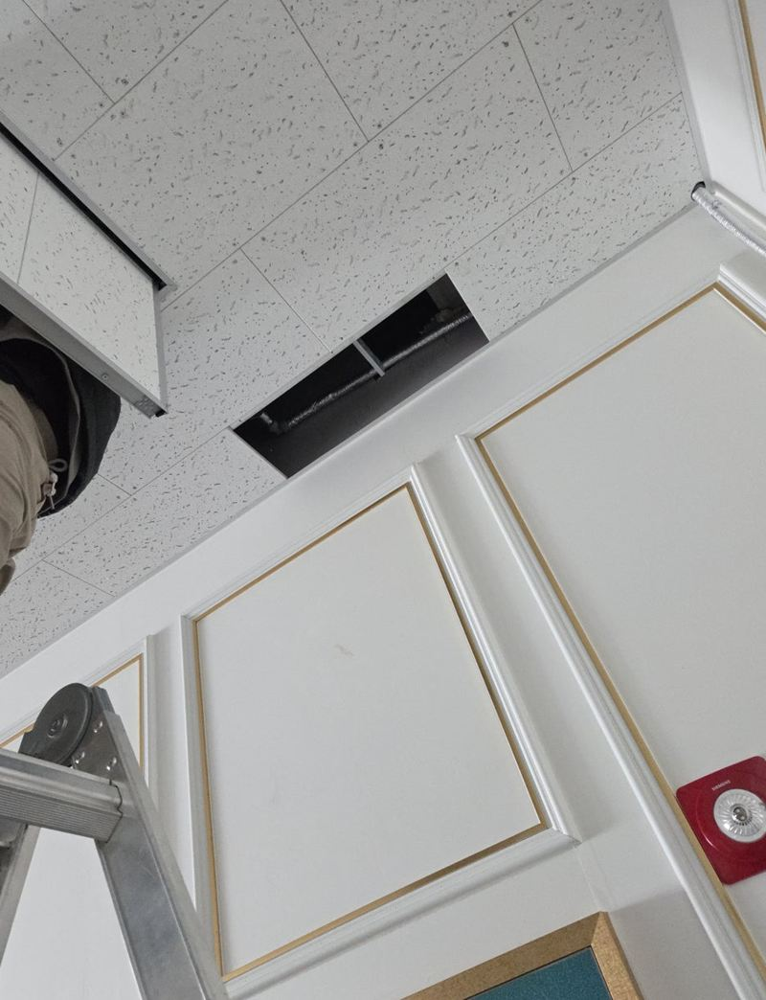

파주 사무실 이전 싱크대 철거 비용과 순서


이전 전설치 후← 밀어서 전후 비교 →
쓰던 싱크대와 온수기를 새 사무실로 옮기고 싶다는 문의였어요. 문제는 새로 들어갈 호실이었어요. 학원으로 쓰던 곳이라 벽과 바닥은 깔끔했지만, 싱크대 자리에 수도가 아예 없었고 배수구는 데코타일 아래 묻혀 있었어요.
| 현장 | 파주 메트로프라자, 학원으로 쓰던 호실로 사무실 이전 |
|---|---|
| 옮긴 것 | 사무실 싱크대(볼·상판·하부장)와 온수기 |
| 새 공간 상황 | 급수 라인 없음, 배수구는 데코타일로 덮여 있음 |
| 한 일 | 배관 분리·철거 → 바닥 절개해 배수 열기 → 트랩 연결 → 천장·벽으로 급수 → 재설치 |
다시 쓸 수 있게 철거하기
하부장 문을 열어 급수·배수·온수기 연결을 확인하고, 배관에 남은 물을 빼고 역류하지 않게 막은 뒤 한 줄씩 풀었어요. 배관을 잘라 내지 않고 규격대로 분리해야 새 공간에서 그대로 다시 쓸 수 있어요. 다시 쓸 부속은 따로 모아 챙겼어요.


수도 없는 방에 물 끌어오기
먼저 데코타일을 부분적으로 잘라 묻혀 있던 배수구를 다시 열고, 냄새와 역류가 없도록 트랩을 잡아 배수관을 연결했어요. 급수는 천장과 벽을 타고 끌어와 싱크대 자리에 정확히 맞춰 뺐어요. 이 설비 작업이 이번 현장에서 가장 손이 많이 간 부분이에요.


그다음 싱크대를 세우고 볼과 상판을 맞춘 뒤 온수기를 다시 달았어요. 물을 틀어 급수와 배수, 온수가 모두 정상인지 확인했어요.


비용이 크게 갈리는 곳은 "새 공간"
싱크대를 떼고 옮겨 다시 세우는 것 자체보다, 새 공간에 물과 배수가 준비돼 있느냐가 비용을 가장 크게 바꿔요.
| 새 공간 상태 | 필요한 작업 |
|---|---|
| 급수·배수가 이미 있음 | 재설치와 연결만 |
| 배수만 있음 | 급수 라인 연장 |
| 둘 다 없음(이번 현장) | 바닥 절개, 배수 연결, 급수 배관 신설 |
사무실 싱크대 이전 질문
철거만 하고 원상복구도 해 주나요?
싱크대를 뗀 자리의 배관 마감과 간단한 정리는 함께 해요. 벽·바닥 큰 공사는 범위를 보고 상의해요.
같은 건물 안 이동도 맡기나요?
네, 층만 옮기는 이전도 해요. 층과 엘리베이터 사용 가능 시간을 알려주세요.
천장으로 배관을 빼면 보기 싫지 않나요?
천장 안이나 벽 모서리를 따라 최대한 덜 보이게 정리해요. 노출이 꼭 필요하면 깔끔한 덮개로 마감해요.
온수기 없이 싱크대만 옮겨도 되나요?
네, 필요한 것만 옮겨요. 온수기를 새로 달고 싶으시면 전원 위치를 먼저 봐요.
건물 관리실 허가가 필요한가요?
바닥 절개나 배관 공사가 들어가면 관리 규정상 신고가 필요한 경우가 많아요. 미리 확인해 주세요.
배수 경사가 안 나오면 어떻게 하나요?
배수구가 멀면 싱크대 높이나 배관 길이를 조정해 경사를 만들어요. 그래도 어려우면 배수 위치를 옮기는 방법을 검토해요.
데코타일 자른 자리는 티가 나나요?
배관을 연결한 뒤 자른 자리를 다시 덮어 정리해요. 하부장 아래라 대부분 가려져요.
다른 싱크대·수납장 현장
- 부천 싱크대 이사 이전 재설치 비용과 방법
- 부천 아일랜드 식탁 리폼으로 공간 넓히는 방법
- 동탄 지식산업센터 싱크대 설치, 업체 고르는 기준
- 화성 빌트인 오븐 철거 후 하부장 제작 비용
- 종로 싱크대 하부장 곰팡이 보수 방법
- 성동 사무실 이전 시 기존 싱크대 재설치 순서
- 동탄 주방 싱크대 상하부장 철거·제작 비용 · 블로그
- 고양 싱크대 하부장 밑판 썩음, 교체 방법 · 블로그
- 고양 키큰장 리폼으로 상부장 만드는 방법 · 블로그
- 경기광주 부엌 수납장 교체 비용과 순서 · 블로그
- 하남 펜트리장 제작·이전 설치 방법 · 블로그
- 화성 상부장 처짐 없이 벽면 고정하는 방법 · 블로그
- 종로 오픈 수납장 문짝 새로 다는 방법 · 블로그
지금 싱크대와 새 공간 사진, 새 공간에 수도가 있는지 알려주세요.
전화 상담 010-4517-9872